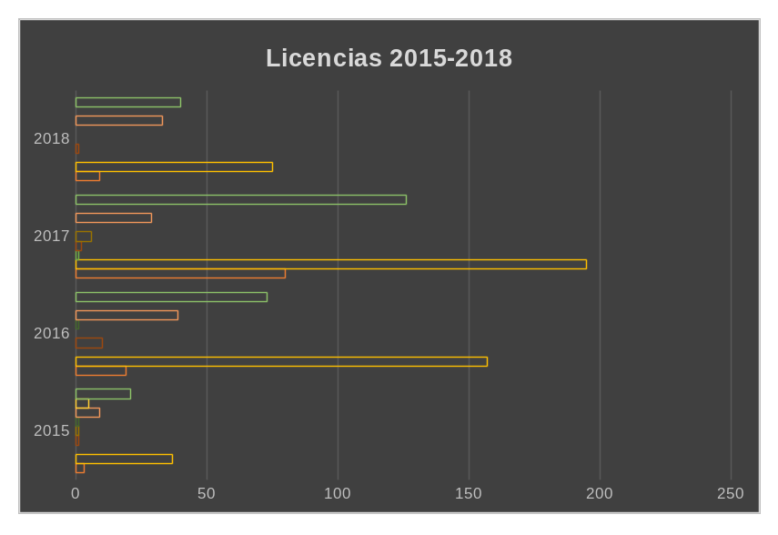
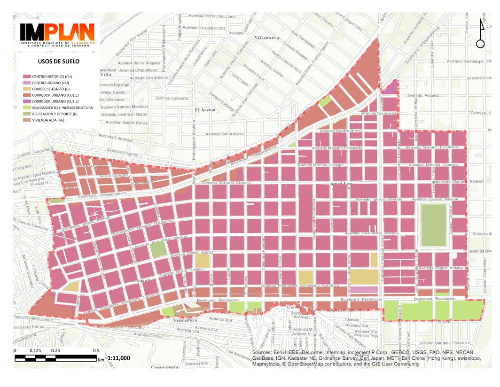

El Centro Histórico de Torreón está conformado por 298 manzanas, en donde una de las principales actividades económicas es el comercio con 4,784 unidades económicas, es decir el 17.88% de las unidades económicas totales del municipio.
La actividad económica en este sector se ha fortalecido con proyectos como el Paseo Morelos, el Teleférico y con actividades dominicales como el Paseo Colón. Por otro lado, aunque todo este busca revitalizar la zona, aún existe poca actividad habitacional.
¿En qué se dividen las principales actividades económicas de este polígono? La expedición de licencias de funcionamiento por parte de la Dirección de Desarrollo Económico y Turismo de Torreón brinda como dato la apertura de 974 comercios en el Centro Histórico (CH) en el periodo de 2015 a marzo de 2018.
Las licencias de Funcionamiento corresponden 25 a bares, 464 a comercios, 110 a oficina, 260 a servicios y 86 a restaurante bar; entre otros. La cantidad de licencias otorgadas fue en aumento desde 2015, con una mayor representación durante el año de 2017, de acuerdo con el departamento de Apertura de empresas y Ventanilla Universal, entre los periodos de febrero de 2015 a marzo de 2018.
Se puede apreciar que los ámbitos que más han crecido son: restaurante bar, el comercio en general y el área de servicios. También la apertura de oficinas ha seguido creciendo, con 29 licencias tan sólo en 2017 y 33 a marzo del 2018. Los que menos han crecido en este sector son los espacios dedicados a la educación o a la industria.
De las 974 licencias otorgadas entre 2015 y 2018, 111 corresponden a restaurantes y bares, un giro que ha tenido un auge en los últimos dos años y ha permitido diversificar las actividades de recreación en la zona oriente del polígono del CH.

El uso de suelo es específico para este sector, con una estructura urbana de vivienda mixta y de acuerdo a la matriz de compatibilidad de usos de suelo del Reglamento de Desarrollo Urbano de Torreón; los usos y destinos del suelo Restaurante con venta de bebidas alcohólicas sin espectáculos, Restaurante con venta de bebidas alcohólicas con espectáculos, Bar, Cantina, Canta bar, etc. se encuentran “condicionados”.
Es decir que se pueden llevar acabo pero requieren presentar para su aprobación, un estudio detallado que demuestre que no se causarán impactos negativos al entorno y deberán cumplir con los siguientes condicionamientos y normas mínimas de evaluación, dependiendo de la zonificación que se trate y según lo señalado en la Matriz de Uso de Suelo:
1) Informe Preventivo o manifiesto de impacto ambiental aprobado.
2) Estudio de impacto urbano aprobado.
3) Estudio de impacto vial aprobado.
4) Dictamen aprobado por parte de protección civil.
DEMOGRAFÍA
La zona en la que se concentra el mayor número de establecimientos con venta de bebidas alcohólicas es al oriente del polígono del CH, abarcando principalmente las colonias Primero y Segundo de Cobián, las cuales cuentan con 990 y 1,807 unidades económicas respectivamente.
El perímetro Primero de Cobián, está limitado al norte por bulevar Independencia, al sur por bulevar Revolución y entre Calle Treviño y Calzada Colón. Aquí la principal actividad económica es comercio al menudeo con 22.63% del total de unidades y otros servicios.
En cuanto al perímetro Segundo de Cobián está limitado al norte por bulevar Independencia, al sur por bulevar Revolución y entre Calzada Colón y Calle Juan E. García y en esta área más de 22 % de las actividades corresponden al área de salud y otros giros importantes son comercio al menudeo y preparación de alimentos y bebidas.
Por otro lado la población del área Primero de Cobián asciende a 2.513 personas, 65% cuenta con una edad de entre 15 a 64 años. Y en Segundo de Cobián viven más de 8 mil personas cuyas edades en un 64 % oscilan también entre los 15 y 64 años.
Las actividades de recreación o esparcimiento como los bares y restaurantes en el Centro Histórico, han permitido crear puntos de interés y atracción que generan una movilidad de usuarios de otras zonas y por tanto un incremento en sus diferentes especialidades económicas.
